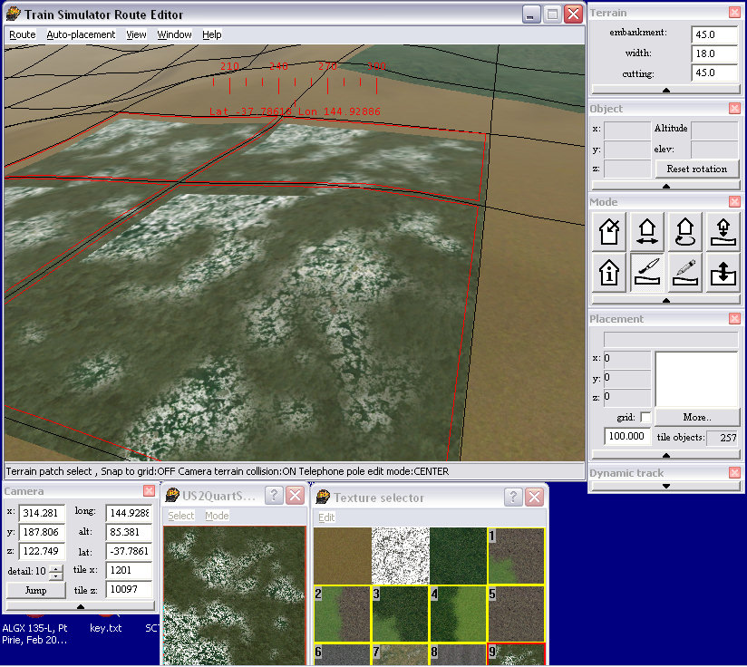

Selecting and Placing Terrain Patches in RE in MSTS
by Yuri Sos
Open Route Editor.
Make sure you have the Textures and Textures Select windows open (Use Windows menu option)
The Textures Select window will have anywhere from 1 to many textures already visible in thumbnail form. For the purposes of this tutorial, the route I've selected for screenshots has nine open.
Let's start by adding a few extra textures. Click Edit | Insert:
A new window opens with a list of ACE files present in the Route's Terrtex folder; when you click on a filename, a thumbnail of the texture appears:
Select the file you want to add, then press "Open" - it will be added to the list of Textures:
Continue to do this until you have all the textures you need. Here I've selected a total of 12 textures.
Important: you can have up to nine textures "active" at any given moment (you will eventually place them by pressing the numbers 1-9 on the MAIN keyboard (NOT the keypad to the right of the main keyboard).
If you have more than nine textures, you select the nine active textures by pressing "Q" to toggle though the textures (click on the title bar for "Texture Select" to make sure it's the active window). This is what you will see as you press "Q" repeatedly:
To delete an unwanted texture, click on the unwanted texture to highlight it (ie framed in red), then click edit | Remove. It is only removed from the Texture Selector window - the file itself is not deleted from the Terrtex folder.

To place the texture, press the Terrain tool (arrow #1), then click on the patch you wish to alter: it will be outlined in red (arrow#2):
You can select more than one patch by Shift-Clicking the patches.......
Now press the number of the terrain you wish to use (I pressed "2" here) and, presto, the patches are changed:
Now if you want to use one of the textures that's not numbered 1-9, make the Texture Selector window active, press "Q" until the texture you want has a number, make the main window active and press the appropriate number ("9" in this example):

If you've used a "corner" type texture such as this.....
you can select one patch, right-click and rotate it.....
.....and achieve a match with adjacent patches.
De-select the terrain tool by pressing on the Place Object button, then point your camera at the sky (so that NOTHING is selected) and Save.
I hope you've found this tutorial of benefit.
Enjoy.